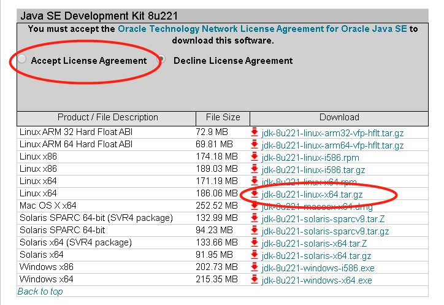
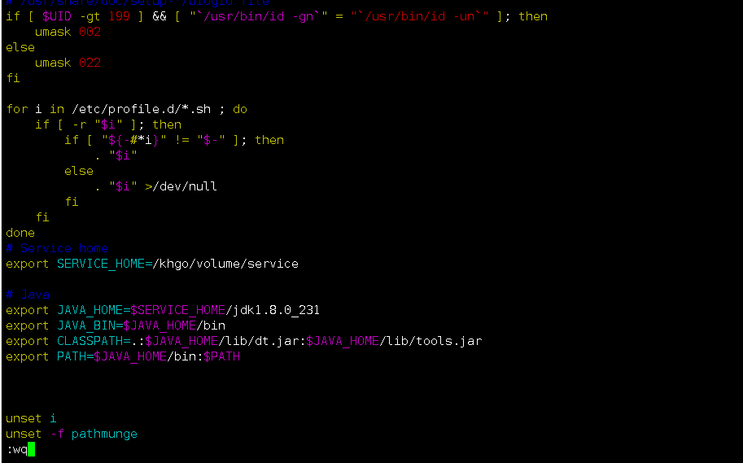
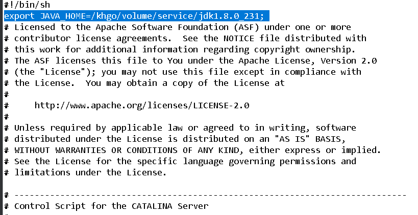
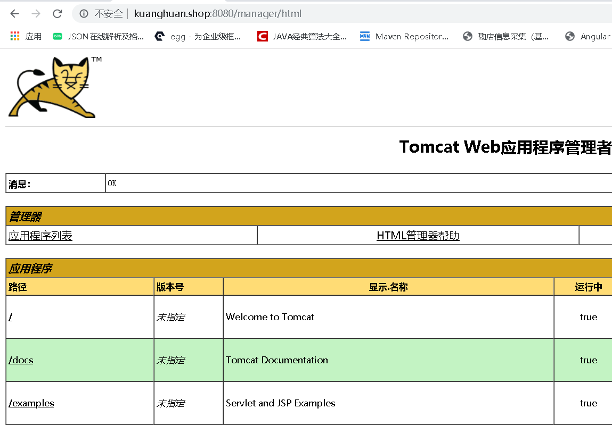
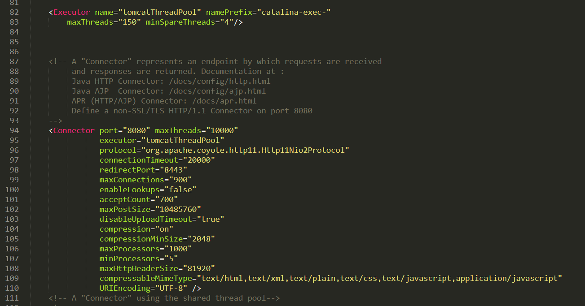
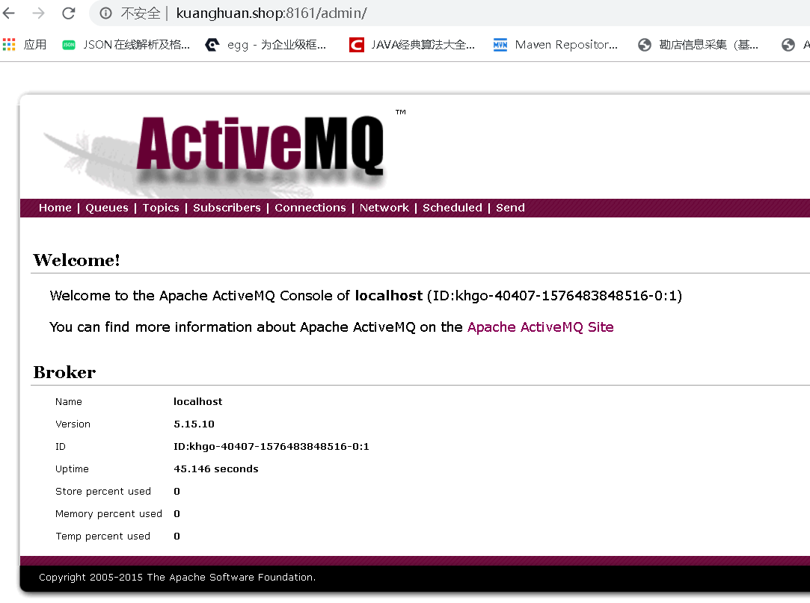

安装JDK8
- jdk-8u211-linux-x64.tar.tar.gz
- 选择与自己系统相匹配版本，我的是centOs7 64位，选择的是以tar.gz结尾
 - 通过FTP工具将下载好的jdk-8u211-linux-x64.tar.gz传输到/khgo/volume/service
解压
1
tar -zxvf jdk-8u211-linux-x64.tar.tar.gz
编辑/etc/profile
生效命令：
1
source /etc/profile
测试命令
1
java -version

- 出现上面的信息,说明安装成功！
安装Tomcat8
-
1
2cd /khgo/volume/service/
wget https://archive.apache.org/dist/tomcat/tomcat-8/v8.5.47/bin/apache-tomcat-8.5.47.tar.gz 解压安装包
1
tar -zxvf apache-tomcat-8.5.47.tar.gz
设置为系统服务
1
2
3
4
5
6
7
8
9
10
11
12
13
14
15# tomcat8080.service
# vim /lib/systemd/system/tomcat8080.service
[Unit]
Description=Tomcat
After=syslog.target network.target remote-fs.target nss-lookup.target
[Service]
Type=oneshot
ExecStart=/khgo/volume/service/apache-tomcat-8.5.47/bin/startup.sh
ExecStop=/khgo/volume/service/apache-tomcat-8.5.47/bin/shutdown.sh
ExecReload=/bin/kill -s HUP $MAINPID
RemainAfterExit=yes
[Install]
WantedBy=multi-user.target编辑catalina.sh，由于Tomcat默认情况下会用系统的环境变量中找到JAVA_HOME和JRE_HOME。但是有的时候我们需要不同版本的JDK共存。
1
2
3
4
5
6export JAVA_HOME=/khgo/volume/service/jdk1.8.0_231;
#或用的全一点如下设置（用上面只设置一个JAVA_HOME足够了）：
export JAVA_HOME=/usr/local/java/jdk1.8.0_231
export JRE_HOME=/usr/local/java/jdk1.8.0_231/jre
export PATH=$PATH:/usr/local/java/jdk1.8.0_231/bin
export CLASSPATH=/usr/local/java/jdk1.8.0_231/lib:/usr/local/java/jdk1.8.0_231/jre/lib如图：
添加完即可
1
systemctl enable|status|start|restart|stop tomcat8080.service
安装成功！
- Tomcat8优化

元素属性：1
2
3
4
5
6
7
8
9
10
11
12
13
14
15
16
17
18
19
20
21
22
23
24
25<Executor
name="tomcatThreadPool" <!--线程名称-->
namePrefix="catalina-exec-"
maxThreads="150" <!--最大处理连接数线程-->
minSpareThreads="4" /> <!--保留最少线程数-->
<!-- 将原有的Connector 替换为带有线程池的Connector如下,其实servlet.xml已经有了,只要打开就可以了,将原来的去掉 -->
<Connector
port="8080" <!-- Connector创建server socket并等待连接的TCP端口号。操作系统在特定的IP地址上只允许一个服务器应用程序监听特定的端口 -->
maxThreads="10000" <!-- 该线程池可以容纳的最大线程数、默认值：200 -->
executor="tomcatThreadPool"
protocol="org.apache.coyote.http11.Http11Nio2Protocol" <!-- 为了使用HTTP处理器，该属性值必须为HTTP/1.1（缺省值） -->
connectionTimeout="20000"
redirectPort="8443" <!-- 如果Connector支持非SSL请求，在收到一个要求使用SSL传输的请求以后，Catalina会自动将该请求重定向到这里指定的端口号 -->
maxConnections="900"
enableLookups="false" <!-- 如果希望调用request.getRemoteHost()进行DNS查询，以返回远程客户的实际主机名，将enableLookups设为true。如果希望忽略DNS查询，仅仅返回IP地址，设为false（这样提高了性能）。缺省情况下，DNS查询是使能的 -->
acceptCount="700" <!-- 接受最大并发数量 ,超过这个数量就会返回连接被拒绝 -->
maxPostSize="10485760"
disableUploadTimeout="true"
compression="on"
compressionMinSize="2048"
maxProcessors="1000" <!-- 同时处理请求的最大数 -->
minProcessors="5" <!-- 同时处理请求的最小数 -->
maxHttpHeaderSize="81920"
compressableMimeType="text/html,text/xml,text/plain,text/css,text/javascript,application/javascript"
URIEncoding="UTF-8" />
安装activemq
- 下载apache-activemq-5.15.10-bin.tar.gz
解压
1
tar -zxvf apache-activemq-5.15.10-bin.tar.gz
防火墙的设置添加8161和61616端口号
配置系统服务
1
2
3
4
5
6
7
8
9
10
11
12
13
14
15
16#/lib/systemd/system/activemq.service
[Unit]
Description=Activemq
After=network.target
[Service]
Type=forking
PIDFile=/khgo/volume/service/apache-activemq-5.15.10/data/activemq.pid
ExecStart=/khgo/volume/service/apache-activemq-5.15.10/bin/activemq start
ExecReload=/khgo/volume/service/apache-activemq-5.15.10/bin/activemq restart
ExecStop=/khgo/volume/service/apache-activemq-5.15.10/bin/activemq stop
PrivateTmp=true
[Install]
WantedBy=mutli-user.target报错：ERROR: Configuration variable JAVA_HOME or JAVACMD is not defined correctly
解决：1
2
3
4
5vim bin/activemq
#在第2行加入
export JAVA_HOME=/khgo/volume/service/jdk1.8.0_231;
#成功启动
systemctl start activemq.service成功！
